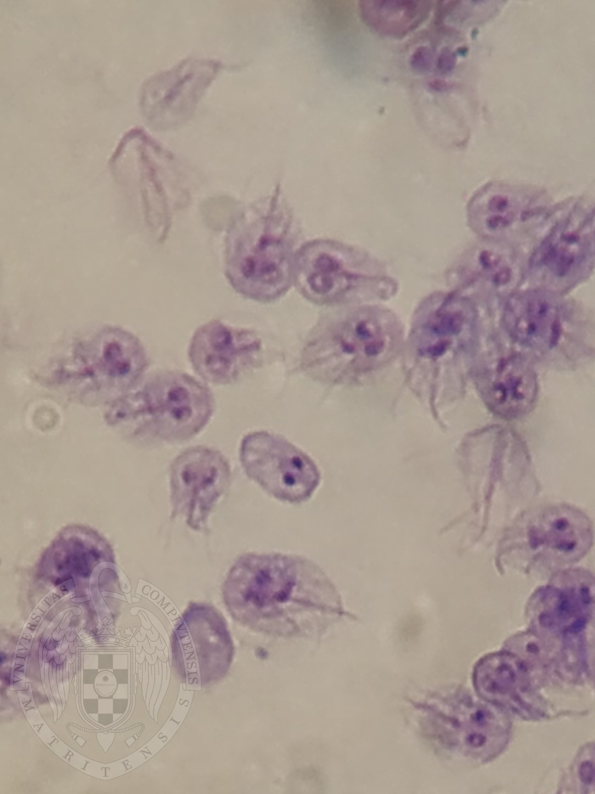
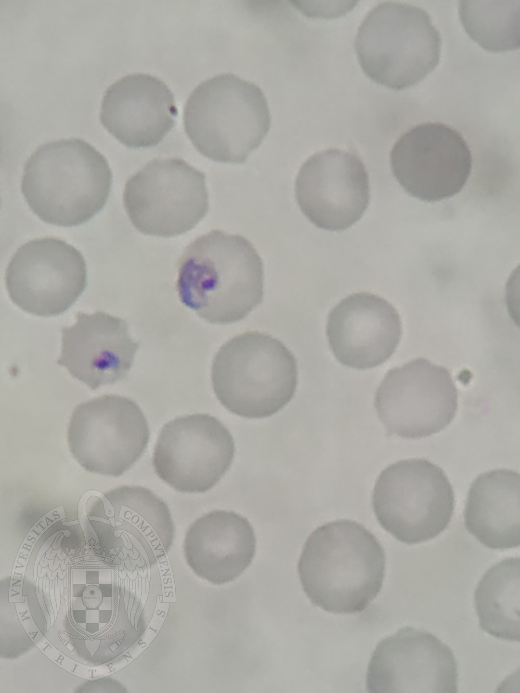
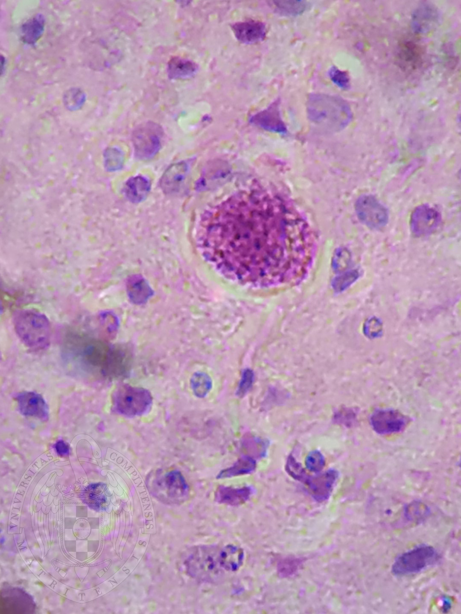

La giardiasis es una infección antropozoonotica del intestino delgado superior causado por Giardia Intestinalis. Puede ser asintomático o causar un cuadro clínico variable desde un ligero malestar abdominal hasta diarreas acuosas profusas, malolientes y espumosas de color amarillo o gris pálido.

El paludismo es una histohemoparasitosis aguda, caracterizada por fiebre recurrente, anemia hemolítica, esplenomegalia y su tendencia a la evolución crónica y a las recidivas. Producida por el protozoo del genero Plasmodium, transmitidos en la naturaleza por mosquitos hembras (Anopheles)

La toxoplasmosis es una Histoparasitosis antropozoonosis cosmopolita. Producida por el parásito reino protista, subreino protozoa, filo apicomplexa, subclase coccidia, genero toxoplasma, especie gondii.
Es un parasito endocelular obligado, que parasita todas las células del organismo. Su nombre proviene del roedor donde fue hallado por primera vez (ctenodactylus gondi)

También llamada Tripanosomiasis Americana, es una antropozoonosis (infección del hombre y los animales) hemohistoparasitaria (en sangre y órganos). Se caracteriza por evolucionar hacia la cronicidad y es endémica de América.